Hobbies
Girl Guiding
I was joined to the Sri Lanka Girl Guides Association, when I'm in grade 7.I started as a Girl guide and I was lucky to selected to join one of the International Girl Guiding Camps where held in Hong-Kong In 2016. Moreover, I had lots of chances to participate many international and local events. I was awarded as a President Guide in 2018. In 2019 I was joined to the Ranger Branch and while preparing to the Prime Minister Award, I joined to the Sri Lanka Girl Guides Youth. I had lots of valuble experiences and chances to my life because I'm a Girl Guide. Hope to do Girl Guiding in my whole life time .
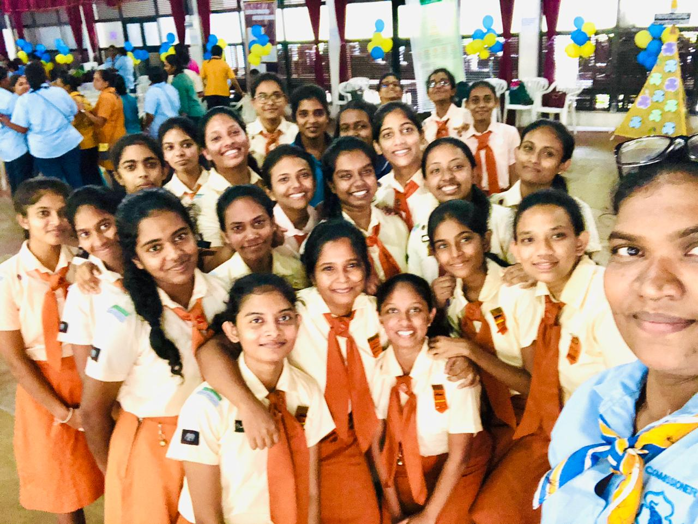 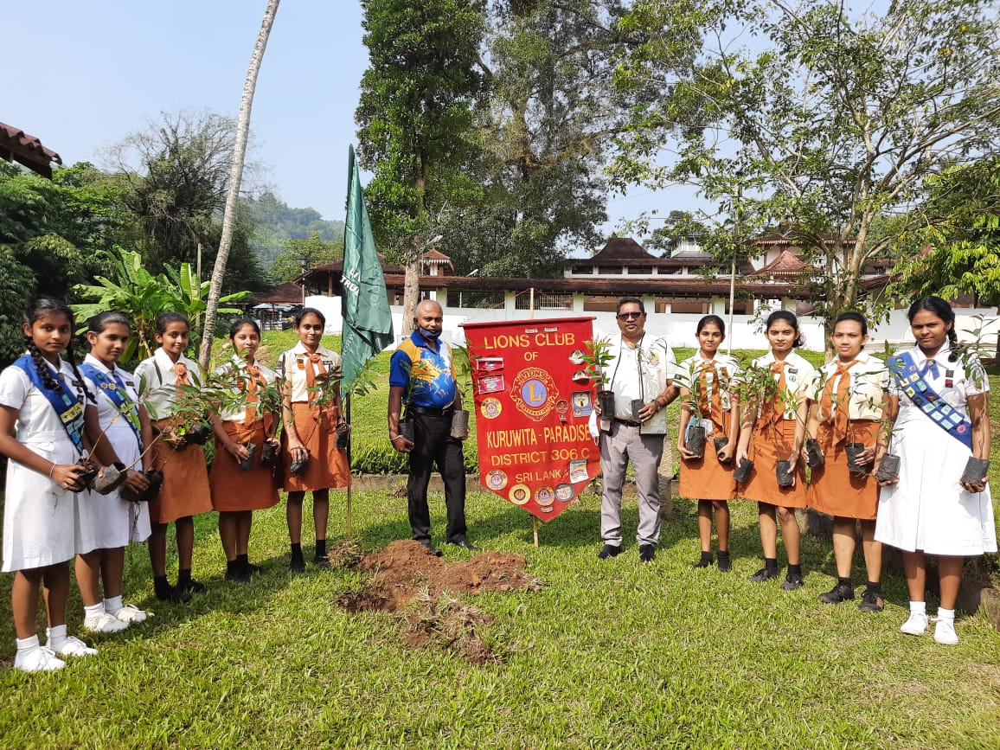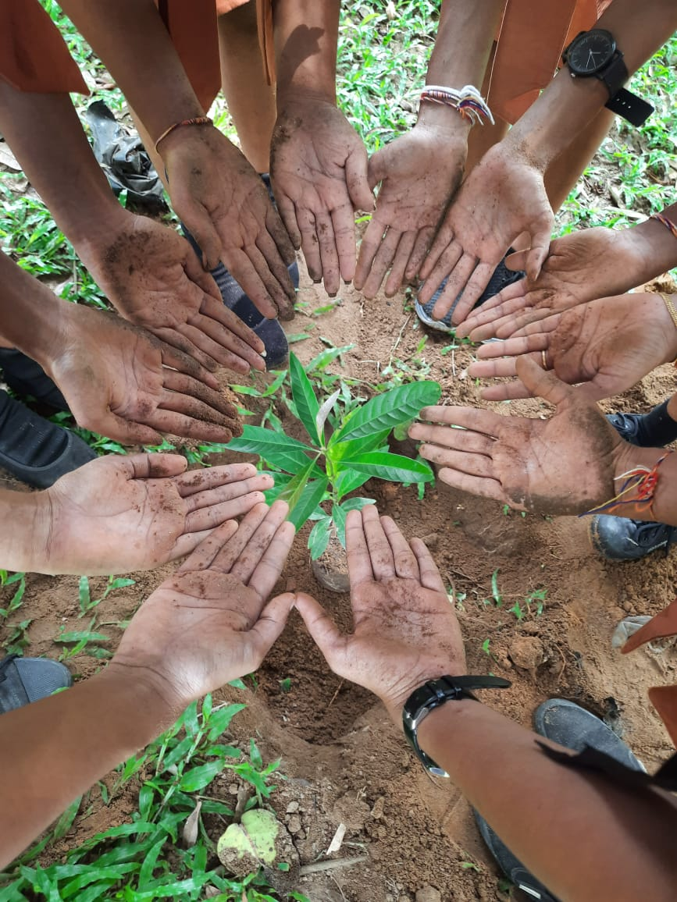
Singing and Playing Sitar
Since my childhood I love music.The biggest reason is that my family has a mucical background as my father is a sitarist and he can sing well . I did music as a subject untill my Ordinary levels but now I'm learning music myself. My father also helps me. In my school I was the sitarist in our orchestra and I was a main vocalist in our quier. I have participated many competitions like "Voice Sri Lanka" and I won from some of them. I love to be live with music because it keeps my mind calmer.

Doing Hand Crafts
It's my favourite thing, that making hand crafts. It makes me happy when I'm free. I make my own hand made birthday cards for birthdays. I make Dream Catchers. Sometimes I do some stitching works and many more things.
 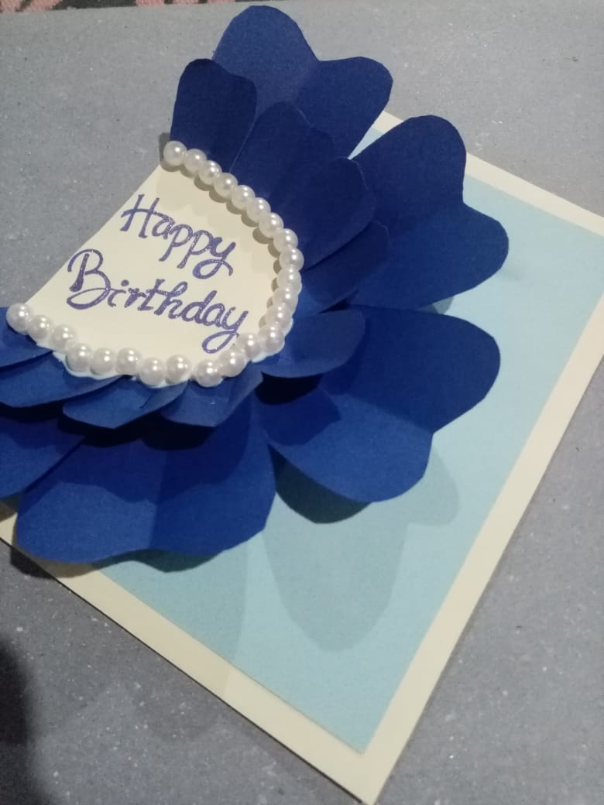
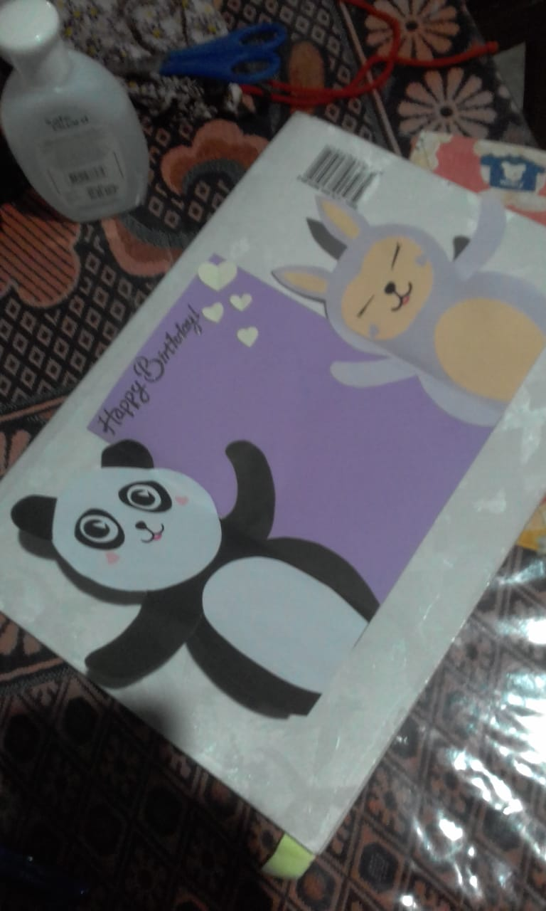
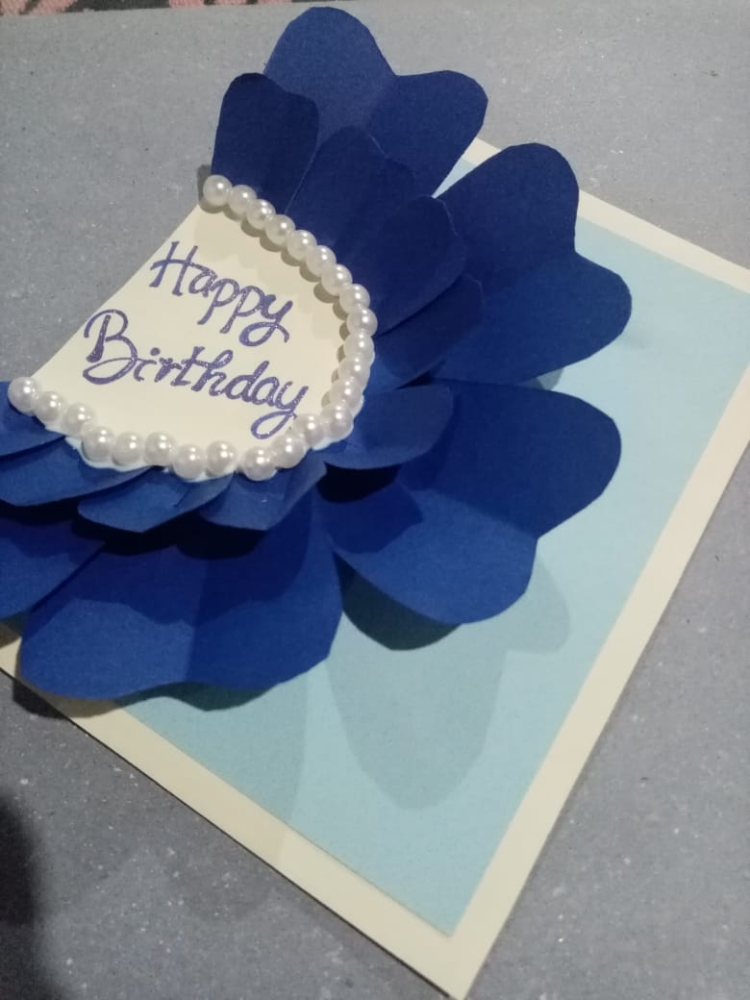
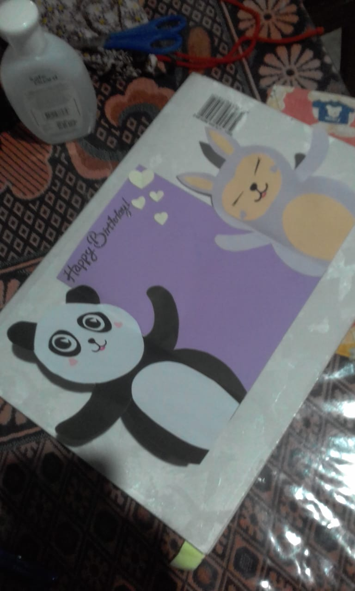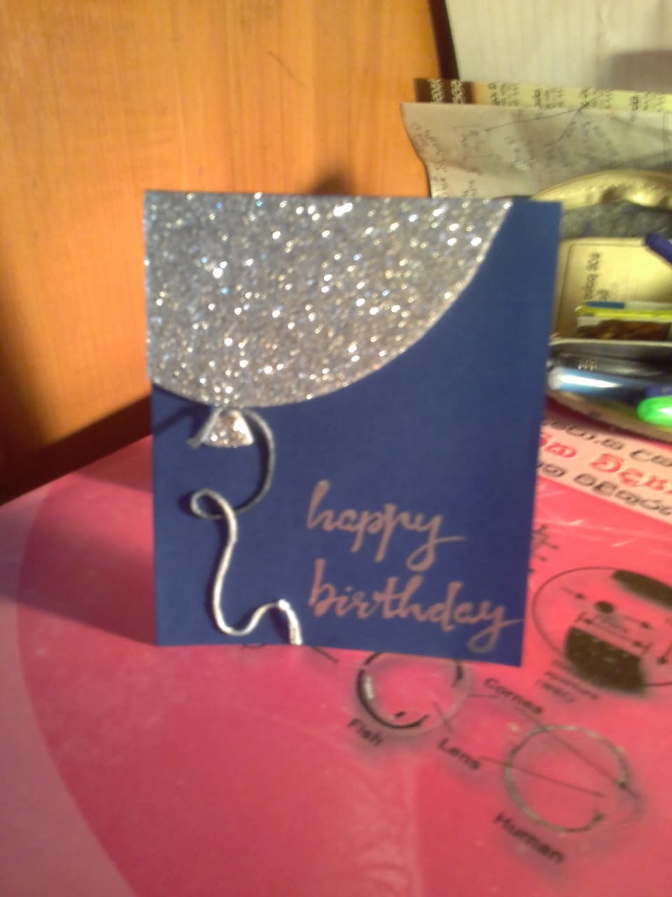 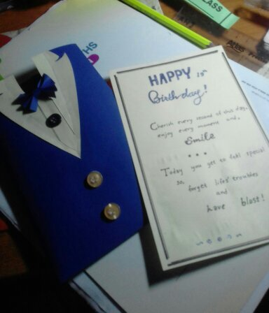
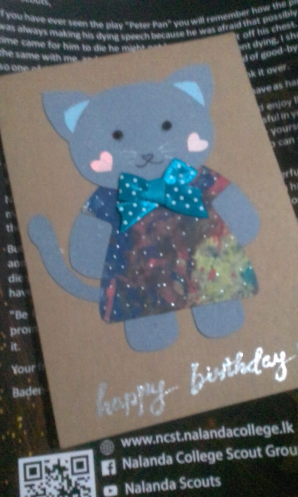 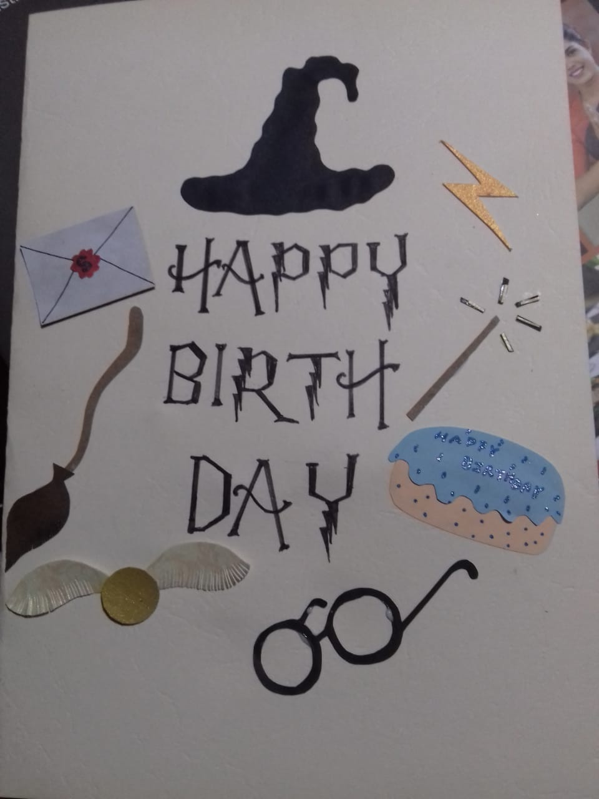
 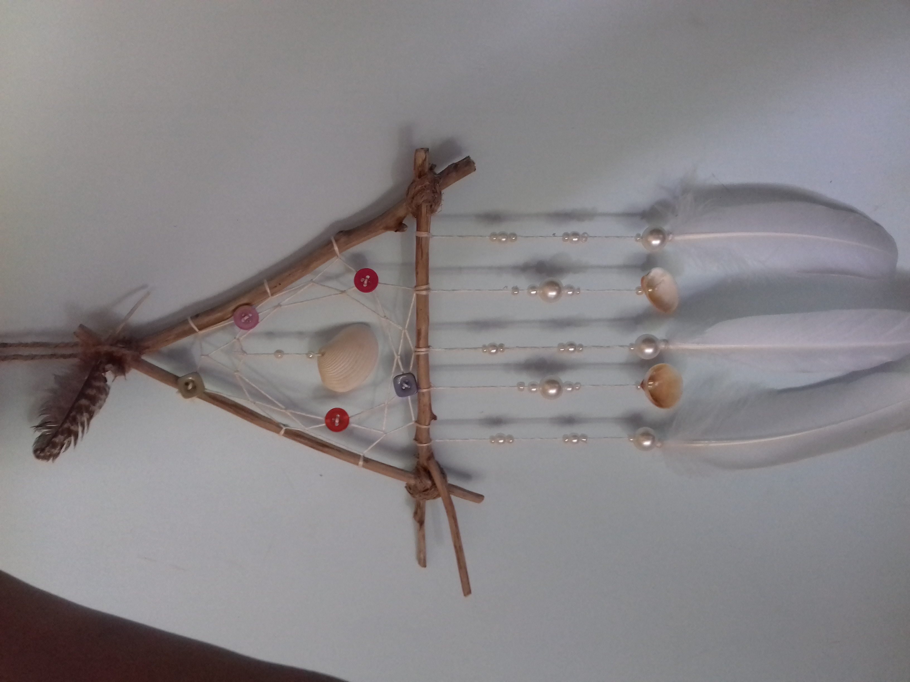
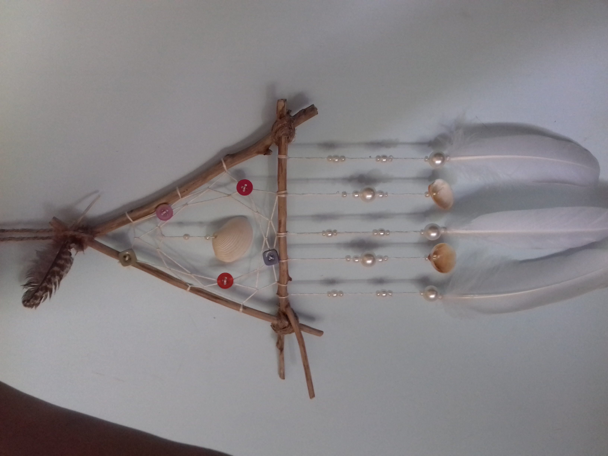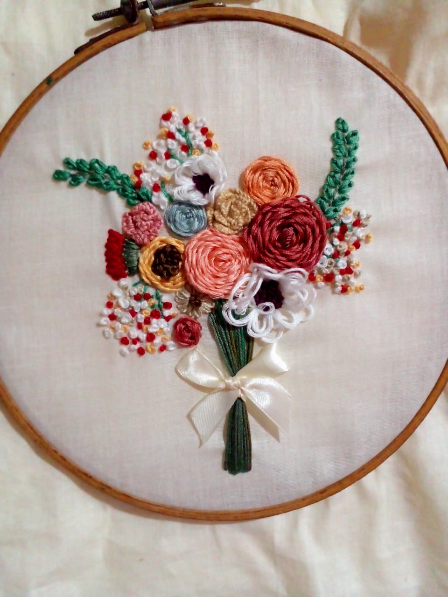 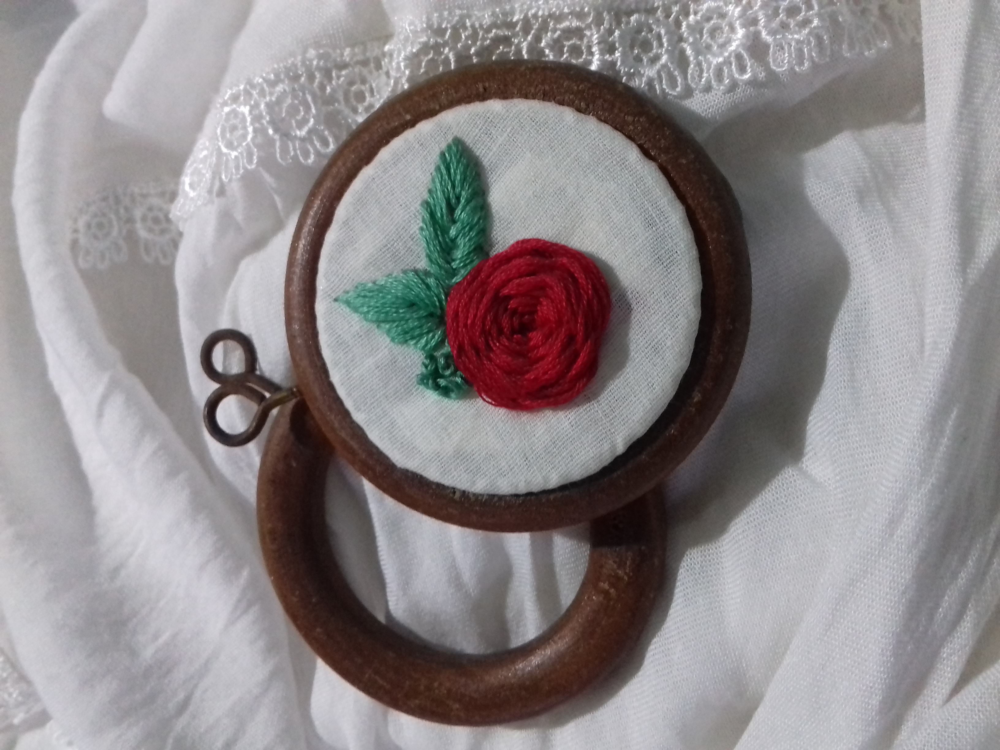